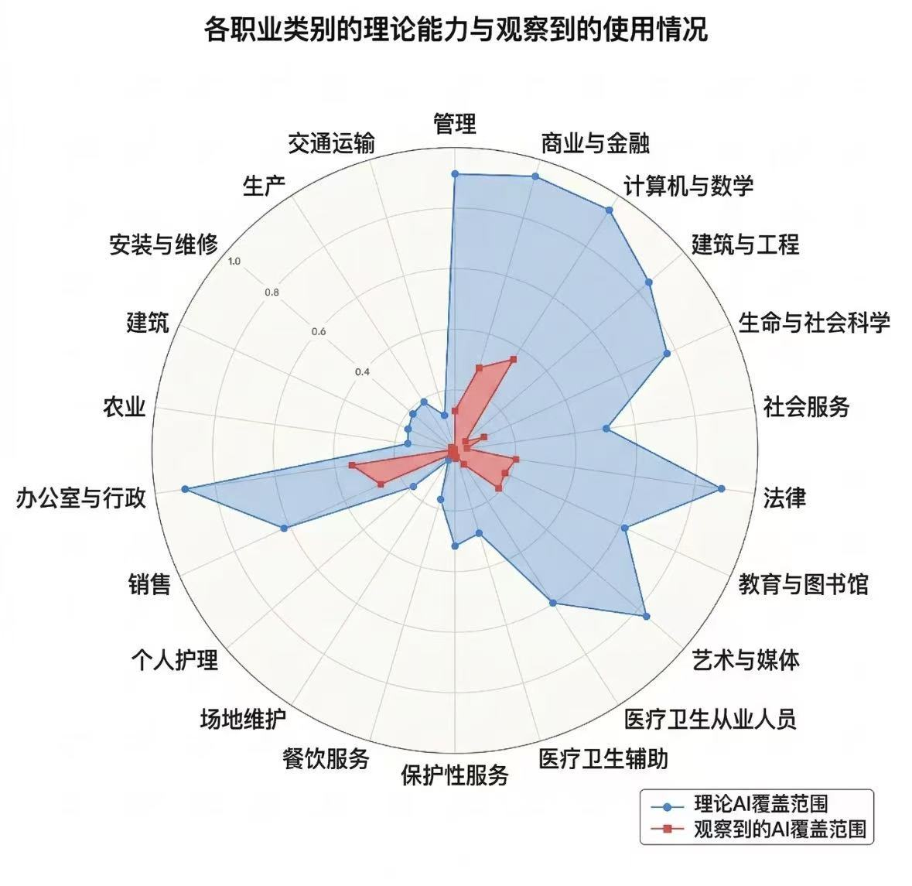

Part One · Engineering
猫咪寄养
Web App
Web App
从零到生产，Claude Code 全程驾驶
 GitHub Copilot
GitHub Copilot Cursor
Cursor Gemini CLI
Gemini CLI Claude Code ✦
Claude Code ✦ OpenClaw
OpenClaw
工作，是对结果负责
不是对过程负责，不是对代码行数负责，不是对"我自己写的"负责

"Vibe coding — fully give in to the vibes, embrace exponentials, and forget that the code even exists."
X · Feb 2025 → now: "agentic engineering"

"We may see the first AI agents join the workforce and materially change the output of companies."
Blog · Jan 2025

"AI could soon compress decades of scientific progress into just a few years."
Machines of Loving Grace · Oct 2024
这不是未来——这是 现在，就发生在这个报告里
Paper 通货膨胀
Agent 让人人都能快速产出论文——arxiv 每天几百篇，reviewers 已经看不过来了
arxiv 年提交量 · 来源: arxiv.org/stats（2025年已超 2.8万篇/月）

Evaluation system 会怎么变？
也许：能不能问出好问题，才是真正的核心竞争力
参考：李宏毅 AI Agent (3/3) · NTU 2026
Andrew Hall (Stanford) · 「100x Research Assistant」

博士生：16h / $1,040 vs Claude Code：1h / $10（104× cheaper）
但：人类还没有被替代
管人 vs 管 Agent
那 junior / 新人 还有机会吗？
这不是悲观——是新的起点
Anthropic 劳动力市场研究（2026）


做这两个项目的时候，我经常需要知道哪个 GPU 是空的。
各种 agent 大乱斗打得热闹，GPU 还是要靠自己抢。
~/.ssh/config，SSH 进所有服务器